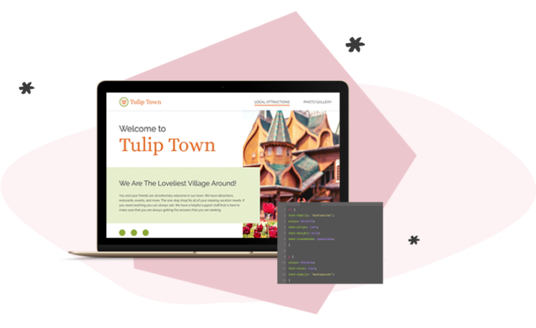

FRONT END DEVELOPER
DESIGNER
THE ONLINE CODING & DESIGN SCHOOL WITH A
TO A
(No Credit Card Required)
FRONT END DEVELOPER
DESIGNER
YOU DESERVE TO…
@LOVE YOUR JOB
@MAKE A GREAT SALARY
@HAVE MORE FLEXIBILITY
Our Job Training Program is...
Our courses are all online and self-paced, meaning you can take them wherever and whenever it’s convenient for you. So whether you’re in your breakroom at work during lunch or it’s 9PM and you’ve just put your kids to bed, these courses were designed to seamlessly fit into your life.
Our courses are all online and self-paced, meaning you can take them wherever and whenever it’s convenient for you. So whether you’re in your breakroom at work during lunch or it’s 9PM and you’ve just put your kids to bed, these courses were designed to seamlessly fit into your life.
All of our courses are led by an instructor. With weekly office hours, email assistance, and the opportunity to receive feedback on completed work, you’ll always have the support you need, when you need it.
We know changing careers is a big step, so we want to make sure that you feel comfortable investing in Skillcrush—and yourself! If you complete the program and you are NOT able to land a qualified, paying job in tech within 6 months of starting your job search, then we’ll refund your tuition in full.


I found Skillcrush by looking up “rad awesome women who code stuff” and it was just so friendly. I was delighted that it could not only be brain stimulating but also fun. I knew that would motivate me to keep up with the lessons. In the end, it was less than a year from starting classes to becoming a paid web developer…it can happen fast. I have two little boys. I feel proud that they can say my mom’s a web developer. She’s the software engineer. That’s really cool. I like that.
Break Into Tech
Graduated: 2022
If you are a career changer, Skillcrush is the BEST program out there. You will not find a better, more cost-effective bootcamp experience out there. I signed up for two tracks: Frontend Developer and the Get Hired Tracks. It cost exponentially less than every other option out there that provides live support and access to coaching. Thanks to Skillcrush, the process from starting the first lesson to the job offer was five months. I not only got a job offer from a major company, but Skillcrush also coached me on how to increase my salary and benefits upward. I cannot more highly recommend Skillcrush and their team. They guided me from start to finish towards a new career that will change life for myself and my family. Check them out – you won’t be sorry!

4.8/5 RATING | 412 REVIEWS

4.74/5 RATING | 145 REVIEWS